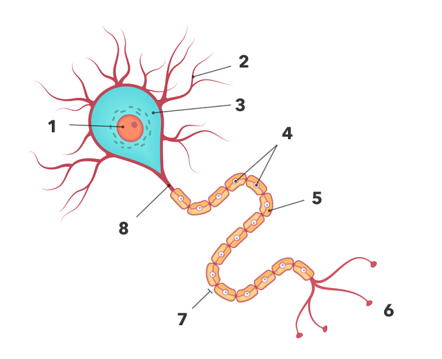

Son diminutas células encargadas de participar en las funciones relacionadas con el sistema nervioso. En nuestro cerebro, existen millones de ellas, se calcula que poseemos alrededor de 80 millones, al menos en el momento del nacimiento. Conforme vamos creciendo, el números de neuronas comienza a decrecer y a partir de los 80 años, el 30% de estas se habrá perdido. A lo largo del día, perdemos y regeneramos neuronas constantemente. Mediante los procesos de regeneración que lleva una neurona, se generan nuevas conexiones, y esto provoca el proceso llamado neurogénesis, que da lugar al nacimiento de nuevas a lo largo de la vida de la persona.
Los científicos saben que las áreas activas del cerebro utilizan más energía y por tanto exigen un mayor suministro de oxígeno y glucosa. De esta forma, más sangre se dirige a estas zonas con el fin de satisfacer la demanda de las neuronas activas. A medida que activas tu cerebro, la sangre fluye a las células cerebrales que están trabajando, llevando el valioso oxígeno con ella. Las imágenes de resonancia magnética se utilizan para estudiar el flujo sanguíneo en el cerebro.
Cada célula cerebral se conecta con el entorno cerebral a través de rápidos disparos de impulsos eléctricos. Las células cerebrales activas tienden a producir dendritas, que son como brazos pequeños que se extienden para conectar con otras células. Una sola célula puede tener hasta 30.000 conexiones. Como resultado de ello, se convierte en parte de una red neuronal altamente activa.
El Factor de Crecimiento Nervioso (FCN) es una proteína que se produce en tu cuerpo, en las células objetivo. Esta proteína se une a las neuronas, marcándolas como activas, diferenciadas, y receptivas. Las células cerebrales activas mejoran la producción de FCN, lo que las protege de ser clasificadas como no activas. Así que cuanto más a menudo se ve tu cerebro desafiado, ejercitado y activado, más FCN se produce.
Recientes estudios han demostrado que las células cerebrales nuevas se generan en un área específica del cerebro llamada hipocampo. Estas células cerebrales pueden migrar a las áreas del cerebro en las que son necesarias, por ejemplo, después de una lesión cerebral. Estas células migrantes son capaces de imitar la acción de las células circundantes, permitiendo la restauración parcial de la actividad en la zona dañada. Por lo tanto, una clave importante para recuperarse de una lesión o de la inactividad cognitiva es el de estimular las áreas del cerebro que pueden beneficiarse de este increíble proceso.
La neurona está formada por una estructura cuyas partes principales son el núcleo, el cuerpo celular y las dentritas. Entre estas existen numerosas conexiones gracias a sus axones, es decir sus pequeñas ramificaciones. Los axones ayudan a crear redes cuya función es transmitir mensajes de neurona en neurona. Este proceso es denominado como sinapsis, que es la unión de los axones mediante cargas eléctricas a una velocidad de 0,001 segundos, esto puede ocurrir unas 500 veces al segundo.
Referencias Neuronas